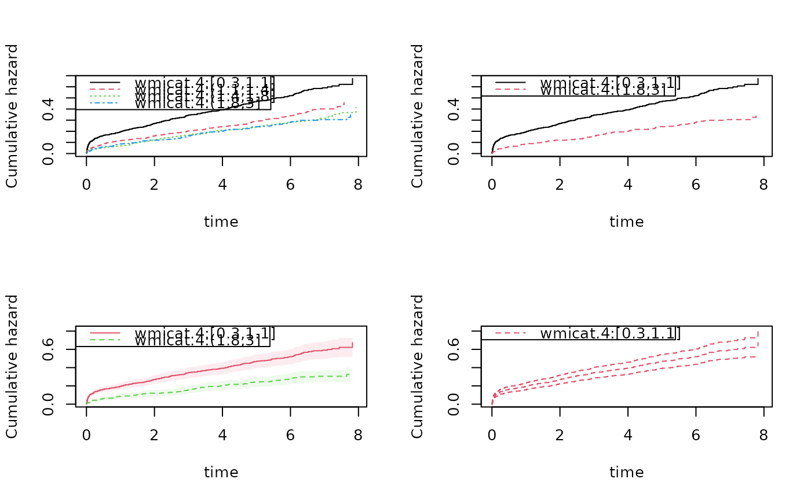

Plotting the baselines of stratified Cox
Usage
basehazplot.phreg(
x,
se = FALSE,
time = NULL,
add = FALSE,
ylim = NULL,
xlim = NULL,
lty = NULL,
col = NULL,
lwd = NULL,
legend = TRUE,
ylab = NULL,
xlab = NULL,
polygon = TRUE,
level = 0.95,
stratas = NULL,
robust = FALSE,
conf.type = c("plain", "log"),
...
)Arguments
- x
phreg object
- se
to include standard errors
- time
to plot for specific time variables
- add
to add to previous plot
- ylim
to give ylim
- xlim
to give xlim
- lty
to specify lty of components
- col
to specify col of components
- lwd
to specify lwd of components
- legend
to specify col of components
- ylab
to specify ylab
- xlab
to specify xlab
- polygon
to get standard error in shaded form
- level
of standard errors
- stratas
wich strata to plot
- robust
to use robust standard errors if possible
- conf.type
"plain" or "log" transformed
- ...
Additional arguments to lower level funtions
Examples
data(TRACE)
dcut(TRACE) <- ~.
out1 <- phreg(Surv(time,status==9)~vf+chf+strata(wmicat.4),data=TRACE)
par(mfrow=c(2,2))
plot(out1)
plot(out1,stratas=c(0,3))
plot(out1,stratas=c(0,3),col=2:3,lty=1:2,se=TRUE)
plot(out1,stratas=c(0),col=2,lty=2,se=TRUE,polygon=FALSE)

plot(out1,stratas=c(0),col=matrix(c(2,1,3),1,3),lty=matrix(c(1,2,3),1,3),se=TRUE,polygon=FALSE)